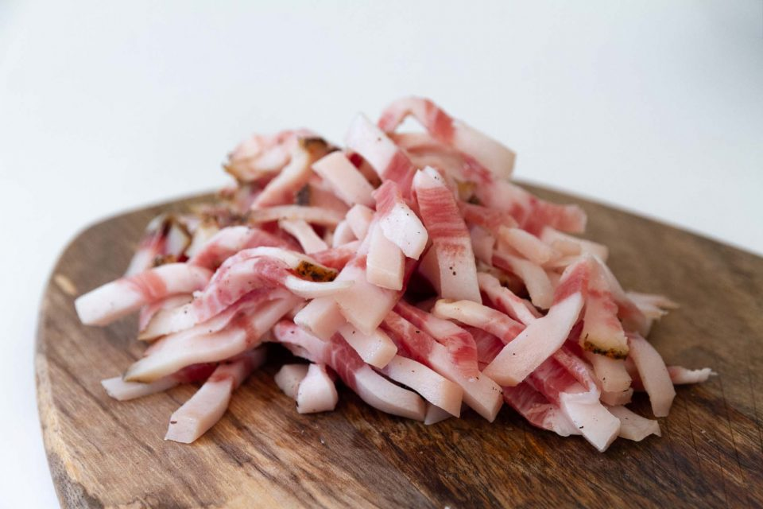
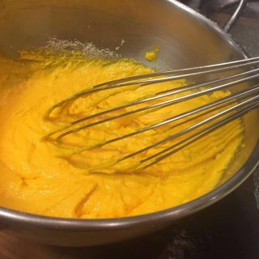
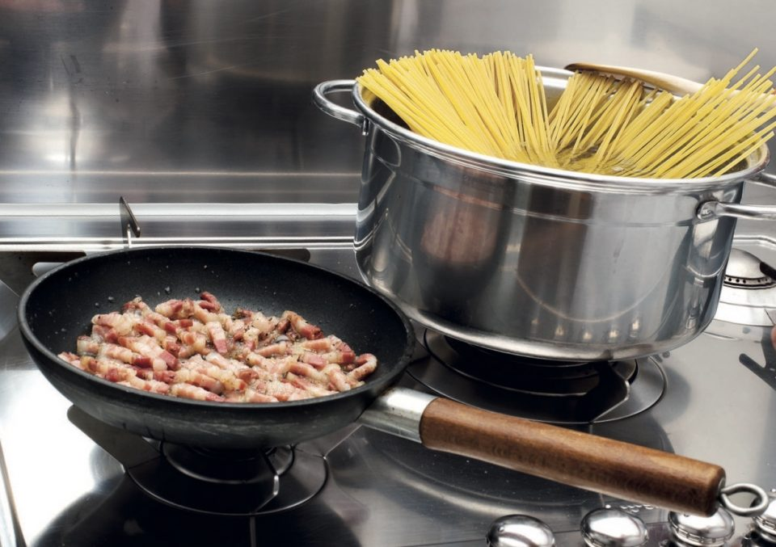
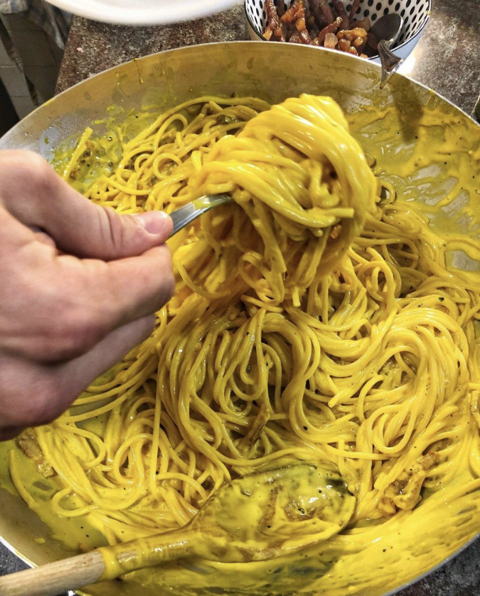

Spaghetti alla Carbonara: la ricetta originale

-
 Difficoltà
Bassa
Difficoltà
Bassa
-
 Costo
Economico
Costo
Economico
-
 Tempo di preparazione
30 Minuti
Tempo di preparazione
30 Minuti
-
 Porzioni
4
Porzioni
4
Ingredienti
- 350g spaghetti
- 50g pecorino romano
- q.b. sale
- 120g guanciale
- 3 tuorli
- q.b. pepe nero macinato fresco
Ecco la ricetta originale degli Spaghetti alla Carbonara:
Preparazione
Scoprite con me come realizzare gli spaghetti alla carbonara passo dopo passo.
Per prima cosa tagliate a strisce (larghe 1cm x 3/4mm di spessore) il guanciale
Mescolate nella ciotola i tuorli ed il pecorino fino ad ottenere una crema mediamente densa ed aggiungete poi, continuando a mescolare, il pepe nero macinato fresco q.b.
Mettete sul fuoco una pentola di acqua e portatela a bollore. Su un altro fornello, in una padella capiente mettete a soffriggere il guanciale, senza olio, il suo stesso grasso è tutto quello che serve:rosolatelo fino a renderlo croccante (circa 6-7′).
Buttate la pasta tenendo conto del suo tempo di cottura… deve essere pronta insieme al guanciale, in modo che si possa condire subito.
Un vero trucco del mestiere che renderà la crema di tuorlo e pecorino, preparata in precedenza, straordinaria è aggiungere un paio di cucchiai di grasso sciolto preso dalla padella del guanciale. Fate attenzione in questa fase, la crema va mescolata energicamente quando si aggiunge il grasso che essendo molto caldo rischierebbe di cuocere parzialmente l’uovo creando cosí dei grumi
Scolate la pasta la dente conservando in un bicchiere una piccola quantità dell’acqua di cottura. Versate la pasta nella padella del guanciale e insaporite per un minuto continuando a mescolare.
Spegnete a questo punto il fornello.
Mescolate ancora per far scendere la temperatura e versate sulla pasta la crema.
L’acqua i cottura conservata in precedenza ci servirà ora, vista la densità della crema per aiutarci ad amalgamarla in modo uniforme con la pasta
Per una finitura del piatto da vero Food Blogger prelevate qualche pezzo di guanciale dalla padella prima di aggiungere la pasta. Una volta impiattato guarnite con una spolverata di pecorino, un po’ di pepe a vostro gusto e il guanciale tenuto da parte.
Non mi resta che augurarvi buon appetito! #strabuono